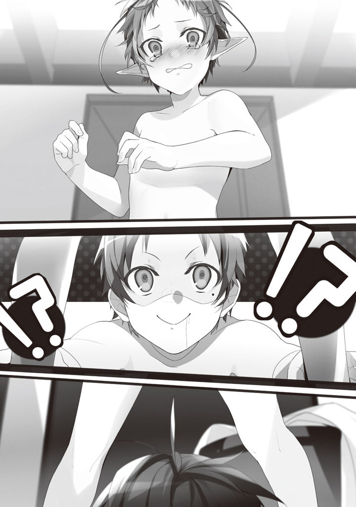

Volume 1 · Unofficial AI-assisted fan translation
Episode 8: Dense
I turned six.
Life hasn't changed much.
Mornings, sword training. Afternoons, if I've got time, fieldwork and magic practice under the tree on the hill.
Lately, I've been trying all sorts of things to see if I can use magic for moves that back up my swordsmanship.
Blasting out wind to speed up my sword, setting off a shockwave to whip my own body around, conjuring a mud bog at the opponent's feet to stop him in his tracks...
Some people probably think that, with me always dreaming up cheap little tricks like these, my swordsmanship will never grow.
But, I don't think so.
There are two ways to get strong at fighting games.
One: figure out how to win with weaker stats than your opponent.
Two: practice to raise your own stats.
What I'm working on right now is number one.
The goal: beat Paulo.
Paulo is strong. As a father he's still got a long way to go, but as a swordsman he's first-rate.
If I put all my weight on number two and just trained my body like an honest idiot, sure, I'd win someday.
I'm six. Ten years from now I'll be sixteen, and Paulo, thirty-five.
Five years after that I'll be twenty-one, and Paulo, forty.
I'd win someday, but then there'd be no point.
Beat a guy who's gotten old, and all you get is the excuse, "Aaah, if only this were back in my prime..."
Only taking him down at the top of his game means anything.
Paulo is currently twenty-five.
He seems to have stepped back from the front lines, but physically he's at his best. Within the next five years, I want to beat him at least once.
With the sword, if I can. But that looks impossible, so, in close combat with magic woven in.
With that in mind, I'm at it again today: image training against the Paulo in my head.
If I'm under the tree on the hill, odds are high Sylph will show up.
"Sorry, did I keep you waiting?"
"Nuh-uh, I just got here."
Saying stuff like a couple meeting up for a date, we start playing.
At first, while we played, the aforementioned little Somal and the rest of the little shits would come around. Partway through, some kids of about upper-elementary age joined in too, but I drove them all off. Every time, Somal's mother came storming into our house yelling.
That's how I figured it out: Somal's mother, rather than caring about her kid or whatever, apparently has a thing for Paulo. She'd been using a kids' fight as an excuse to come see him. Ridiculous.
Somal-kun, being marched all the way to our house over one little scratch, seemed fed up with it too. So he wasn't an injury-faking hustler after all. Sorry for doubting ya.
There were about five raids, I guess.
Then, from one day on, they abruptly stopped coming. Now and then I see them playing somewhere far off, and sometimes we pass each other, but neither side says a word.
Apparently they've decided to ignore us.
And so, that business was more or less settled, and the tree on the hill became our turf.
Now then, never mind the little shits. Sylph.
Calling it play, I've been putting him through magic training.
Because if he learns magic, he can drive off the little shits on his own.
At first, Sylph was out of breath after five or six introductory spells, but over this past year his total mana has grown quite a bit too. Now he can practice magic nonstop for half a day, no problem.
'Total mana has a limit'
The credibility of this statement is thin indeed.
That said, his actual magic still has a long way to go.
He was especially bad with fire. Sylph handled wind and water magic really deftly, but fire was the one thing he couldn't get right.
Why? Because he's got Elf blood mixed in?
Nope.
It's the thing I learned in Roxy's lessons: 'strong element, weak element.'
Just as the words say, every person has an element they're strong in and an element they're weak in.
Once, I tried asking him, "Sylph, are you scared of fire?"
At that he shook his head, "Uh-uh," but he showed me his palm. On it, an ugly burn scar.
When he was about three, in a moment when his parents took their eyes off him, he grabbed the iron skewer by the fireplace, he said.
"But I'm not scared now."
So he says, but deep down, on instinct, he must still be scared.
Experiences like that shape your weak element.
For example, Dwarves often end up with water as their weak element.
Those Dwarves live near the mountains; they play in the dirt from childhood, and as they grow up they spend their days following their fathers around, learning smithing and digging out ore, so they tend to get good at fire and earth. However, while they're working in the mountains, they often get burned when a hot spring suddenly gushes up, or drown when a heavy rain turns into a flood, so they tend to get bad at water.
That's how it goes: race, directly, has nothing to do with it.
Incidentally, I have no weak element.
Grew up all snug and coddled, after all.
Actually, even without fire, you can make warm wind and warm water.
But explaining the concept was a pain, so I had him practice fire magic too. Being able to use fire never hurts, whatever the situation. Salmonella dies off when you heat it. If you don't want to die of food poisoning, you gotta cook things through.
Then again, apparently Beginner detoxification magic can neutralize most poisons anyway.
Sylph struggled, but practiced without complaining.
Probably because it was his own idea.
Sylph, with my staff (the one I got from Roxy) and my Magic Textbook (the one I brought from home) in hand, chanting with a hard look on his face, is beautiful.
If even I, a guy, think so, he's gonna be a hit with the girls someday.
(The heart of jealousy is a father's heart...)
I thought I heard a voice like that from somewhere, and hurriedly shook my head.
No, no. There's no point being jealous. Isn't this the whole plan in the first place?
Operation Hot-Friend Decoy Fishing.
Sylph hot guy, me meh guy, girls go halfsies ♪
"Hey, Rudy. How do you read this?"
While I was singing away in my head, Sylph pointed at a page of the magic book, gazing up at me through his lashes.
That upward look is lethal too. It makes me want to grab him in a hug and kiss him before I know what I'm doing.
Hold it in. Hard.
"This one, see, is 'Avalanche.'"
"What does it mean?"
"When a crazy amount of snow piles up on a mountain, it can't hold up under the weight and comes crashing down. Like, you know how in winter, when snow piles up on the roof, sometimes it slides off with a big whump? A monster version of that."
"Oh, wow... that's amazing. Have you ever seen one?"
"An avalanche? Well, sure, of course I have... not."
Only on TV, that is.
Having Sylph read the Magic Textbook. That tied into teaching him to read and write, too. Learning your letters never hurts either.
I don't know what the literacy rate in this world is, but it's probably not around 100% like in modern Japan.
In this world, there's no magic that makes you able to read.
The lower the literacy rate, the bigger an advantage it is to be able to read.
"I did it!!"
Sylph let out a cry of joy. I looked, and he had pulled off the Intermediate water spell 'Ice Pillar' perfectly. A big, fat pillar of ice had sprouted from the ground and was glittering in the sunlight.
"You've gotten a lot better."
"Yeah!! ...But the thing you were using, Rudy, it's not written in this book, is it?"
Sylph asked, tilting his head.
"Hm?"
When he said the thing I was using, it clicked that he meant the hot water.
I flipped through the Magic Textbook and pointed out two spots with my finger.
"It's right here. Waterfall and Heat Hand."
"......?"
"You use them at the same time."
"............??"
He tilted his head at me.
"How do you chant two at once?"
Oops. I'd been talking from my own gut feel. Right, two at once out loud is impossible, huh...
At this rate, I'm in no position to laugh at Paulo for doing everything by feel.
"Um. You make Waterfall without chanting the spell, and then you warm it up with Heat Hand. I think it's fine to chant one of them, or you can fill a tub with water and warm it up afterward."
I demonstrated doing both at once with chantless casting.
Sylph watched, eyes round. Chantless magic really does seem to count as an advanced technique in this world. Roxy couldn't do it, and apparently even at the University of Magic there was only one teacher who could.
So, Sylph too should go with combined magic instead of chantless casting, probably.
No need to do anything hard when you can get a similar result anyway: that's what I thought, but.
"Teach me that."
"That?"
"The one where you don't say it."
Sylph apparently didn't think so.
Well, sure, getting it out in one shot probably does look better than doing two spells back and forth.
Hmm... Well, if I teach him and it looks impossible, he'll just go with combined magic on his own.
"Mm. Let's see. Okay, so, that feeling you always get while you chant, the mana gathering from all over your body into your fingertips. Try doing that without chanting. When you feel the mana's gathered, picture the spell you meant to use and squeeze it out through the tip of your hand. Try it like that. Start with Water Ball or something."
Did that get across?
Can't explain it right.
Sylph shut his eyes and started going mmmnnh, mmmnnh, and doing a weird wiggly dance.
Passing on something you do by feel is hard.
Chantless casting is something you do inside your head. What way comes easiest is probably different for everyone, too.
Figuring the basics come first, I'd had Sylph chant the whole way through this past year.
Does chantless casting get harder the more you chant, after all? Like being told to do with your left hand what you'd always done with your right, is it hard to switch this late in the game?
"I did it! I did it, Rudy!!"
So I thought, but apparently not.
Sylph let out a happy cry and started firing Water Ball again and again.
Sure, he'd been chanting, but it was only a year, all told. Apparently it's something you can pull off about as easily as taking the training wheels off a bike. The instincts of youth? Or Sylph's talent?
"All right, then. Try all the spells you've learned so far without chanting."
"Okay!!"
Either way, if he can do chantless, he's easier for me to teach, too.
All I have to do is teach him what I do myself, after all.
"Hm?"
Right then, it started to spit rain.
I looked up at the sky, and before I knew it, pitch-black rain clouds had covered it.
After a beat, a pounding rain came down.
Usually I watched the sky and adjusted things so it wouldn't rain until we got home, but today, with Sylph managing magic chantless and all, I'd apparently let my guard down.
"Aw, man, what a nasty rain."
"Rudy. You can make it rain, but you can't make it stop?"
"I can, but we're already soaked, and crops don't grow unless it rains. Unless somebody tells me the bad weather's giving them trouble, I leave it alone."
Talking like that, we ran back to the Greyrat house.
Because Sylph's house is far.
"I'm home."
"S-sorry, to intrude..."
When we went in, Lilya the maid was standing there holding big cloths.
"Welcome home, Young Master Rudeus... and your friend. The hot water is ready. Please dry yourselves off upstairs before you catch cold. The master and the mistress will be home shortly, so I will be seeing to things for them. Can you manage on your own?"
"We'll be fine."
Lilya had apparently seen the downpour and predicted I'd come back soaked. She's a woman of few words and doesn't talk to me much, but she's a capable maid. Without a word of explanation needed, one look at Sylph's face and she turned right back into the house and brought another big cloth.
We took off our shoes to go barefoot, wiped our heads and feet, then went up to the second floor.
When we went into my room, a big tub had been filled with hot water. This world, needless to say, has no such thing as showers, and no custom of filling a bathtub either, so this is what you wash yourself with.
According to Roxy, there are hot springs, apparently.
Well, for a bath-hater like me, this'll do just fine.
"Hm?"
When I'd stripped off my clothes and was stark naked, Sylph had gone red in the face and was fidgeting.
"What's up? You'll catch a cold if you don't strip, man."
"Huh? O-okay..."
But Sylph didn't move. Embarrassed to undress in front of someone...?
Or maybe he still can't undress by himself? Sheesh. Six years old, and still.
"C'mon, arms up."
"Um... okay..."
I got Sylph to raise both arms and yanked his sopping-wet shirt up and off.
Pure white skin with no muscle on it was laid bare. When I went to take his bottoms off too, just like that, he grabbed my arm.
"N-no, don't..."
Embarrassed to be seen, huh.
I was like that too, when I was little. Back in kindergarten. At pool time we'd all strip naked and shower, and being seen by kids my own age was weirdly embarrassing.
Still, Sylph's hands were cold. If I didn't hurry, he really would catch a cold.
I forcibly dragged his pants down.
"S... stop iiit..."
When I got my hand on his kiddie pumpkin bloomers, I got bonked on the head.
I looked up, and Sylph was glaring down at me, eyes full of tears.
"I'm not gonna laugh or anything."
"Th-that's not wh... n-nooo...!!"
That was a pretty serious no. In all the time I'd known Sylph, I'd never been turned down this hard.
Bit of a shock.
Is that it? Is there some law among Elves that you can't let anyone see you naked?
If so, stripping him by force would be wrong, huh...
"Okay, okay, fine. But in exchange, change into dry ones later, got it? Wet underpants feel pretty gross, and if you get chilled you'll get a stomachache."
"Nnn..."
When I let go, Sylph, eyes brimming, nodded over and over.
Cute. I want to get even closer with this adorable boy.
The moment I thought that, out of nowhere, the itch for a prank sprouted inside me.
Me being the only one butt naked? Not fair.
"You're wide open!"
I hooked my hands in his underpants and yanked them down in one go.
Come forth!! Stark-Nak○d Pendulum!
"Eh... n, nooooo!!"
"...Huh?"
Sylph's scream. In an instant, he crouched down and hid his body.
What met my eyes in that instant was not the Pure Shortsword I'd lately grown used to seeing.
Nor, of course, was it a Dark Blade covered in sinister markings.
What was there, no, what wasn't there, was—
That's right... it wasn't there.
Something that shouldn't have been there was there.
Something I'd seen countless times in my past life, inside my computer monitor.
Sometimes it had a mosaic over it, sometimes it was uncensored. The thing I'd watched while thinking someday I wanted to lick the real thing, stick it in the real thing, while I Whitey-Cannoned my Black Lust into a Meet with the Paper Handkerchief—that was there.
Sylph was.

- !?middle strip, left, black circle
- !?middle strip, right, black circle
He... was a she.
My mind went blank.
Did I just do something that's no laughing matter...?
"Rudeus, what are you doing..."
I whirled around, and there stood Paulo. When had he gotten home? Had he heard the scream and come to this room?
I was frozen stiff. Paulo froze stiff too.
There was Sylph, stark naked, crouched down and crying.
In the hand of the stark-naked me, her underpants, clutched tight.
And then, my Cute Baby Boy. Youthful yet ferocious, he was asserting his existence. There was no talking my way out of this.
The underpants dropped from my hand.
Even with the rain outside, that soft little flop seemed to echo strangely loud.
★ Paulo's point of view ★
I got home from work, and my son was assaulting his childhood friend, a little girl.
I was about to tear into him without hearing a word, but I caught myself and slowed down. Maybe there was some reason this time too. I won't repeat last time's mistake. For now, I left the sobbing girl to my wife and the maid, and decided to wipe my son down with the hot water myself.
"Why did you do a thing like that?"
"I'm sorry."
When I scolded him a year ago, you could see he was dead set on never apologizing, but this time the words of apology came right out. He was meek about it, too. Limp as greens rubbed down with salt.
"I'm asking you for a reason."
"Because she was still wet. I thought I'd get her undressed..."
"But she was fighting you on it, right?"
"Yes..."
"Dad told you to be nice to girls, didn't he?"
"Yes... I'm sorry."
Rudeus didn't make a single excuse. What was I like when I was his age?
Seems like all I ever said was 'cause' and 'but.'
I was a little excuse-making brat. My son is a fine boy.
"Well, at your age, maybe it's natural to get curious about that stuff. But no forcing it, got that?"
"...Yes, I'm sorry. I'll never do it again."
Watching my son, looking so crushed, I started to feel bad somehow.
Chasing women runs in my blood. Ever since I was young I've been hot-blooded and oversexed, and whenever I saw a cute girl I'd make a move, one after another, nonstop. I've settled down some now, but back then I truly had no idea what holding back even meant.
He must've inherited it.
For a smart, levelheaded son like mine, an instinct like that is bound to be a torment.
Why didn't I pick up on it for him... no, this isn't the place to sympathize.
From experience, I'll show him what to do.
"Not to Dad. You apologize to Sylphiette. Got it?"
"Sylphi, ette... Do you think she'll forgive me..."
"Don't go apologizing expecting to be forgiven from the start."
When I said that, my son sank even lower.
Come to think of it, the boy had been hung up on that girl from the very start. That ruckus a year ago, too, was something he did to protect her. And for it, he even ended up getting hit by his own father.
After that, too, he played with her just about every day and protected her from the other kids. Even while working hard at the sword and magic, he diligently made time for her. He'd been courting her so hard he went and gave her the staff and the Magic Textbook he treasured most.
If he thinks a girl like that might hate him now, no wonder he's down.
I was the same, back in the day. Whenever a girl turned cold on me, I'd mope.
But rest easy, my son. Speaking from my experience, you can still turn this around, no sweat.
"Hey, it'll be fine. If you haven't been mean to her up to now, apologize from the heart and she'll forgive you, sure enough."
When I said that, my son's face cleared up, just a little.
He's a smart kid. Looks like he slipped up a bit this time, but he'll recover quick.
Better yet, he might turn this slipup to his advantage and take her heart captive.
Reliable, and a little scary what he'll grow into.
Out of the bath, my son went to Sylphiette, and the very first thing out of his mouth was this.
"Sorry, Sylphie. Your hair was short and all, so this whole time I thought you were a boy!!"
I'd thought my son was perfect, but maybe, unexpectedly, he's an idiot.
It was the first time I'd ever thought so.
★ Rudeus's point of view ★
Apologizing, flattering, soothing: somehow, I got forgiven.
Sylph was a girl, so from now on I decided to call her Sylphie.
Her real name, apparently, is Sylphiette.
Paulo gave me an exasperated look: mistaking a cute girl like that for a boy, what kind of eyes did I have?
Hey, I never figured I'd pull a "Dude, you were actually a girl!!" for real either.
Can you blame me? When we first met, her hair was shorter than mine. Not so stylish you'd call it a pixie cut, but not as short as a buzz cut either, something like that. Her clothes, too: she'd never once dressed like a girl. A light-colored top and pants. That's it. If she'd at least been wearing a skirt, even I wouldn't have gotten it wrong.
No... if you think it over calmly, see.
She was bullied for her hair color. So, she'd cut her hair short to stand out less. When you get bullied, you have to run away. So, she'd wear pants rather than a skirt. Sylphie's family isn't that well-off. So, once they'd made one pair of pants, there'd be no money left for a skirt.
If we'd met three years later, even I wouldn't have gotten it wrong.
I'd just had it fixed in my head that she was a cute boy; it's not like she's even that androgynous.
If only she'd... no, let it go.
Anything I say is just an excuse.
Once I knew she was a girl, my attitude went and changed on me.
Seeing Sylphie dressed like a boy gave me a funny feeling.
"S-Sylphie, you are cute, so wouldn't it be better if you grew your hair out more, perhaps?"
"Huh...?"
If she changed, starting with her looks, it'd be easier to make a fresh start.
That's what I thought, and that's what I suggested.
Sylphie hates her own hair, but emerald-green hair shines like it's see-through in the sunlight. I'd really like her to grow it out. And if at all possible, put it in twintails or a ponytail.
"Don't wanna..."
But, since that day, Sylphie had grown wary of me.
Physical contact especially, she started openly avoiding.
Up to now she'd gone along with anything I said, yes, yes, so it was a bit of a shock.
"I see. Well then, shall we practice chantless magic again today?"
"Okay."
I rearranged my face to hide what I felt inside. Sylphie has no friends besides me, so in the end it comes down to the two of us playing. Some bad feeling still seems to linger, but at least she plays with me.
So, for now, I'll call that good enough.
My current skills, expressed by this world's standards, are as follows.
'Swordsmanship'
Sword God Style: Beginner Water God Style: Beginner
'Attack Magic'
Fire: Advanced Water: Saint Wind: Advanced Earth: Advanced
'Healing Magic'
Healing: Intermediate Detoxification: Beginner
Healing magic is, as you'd expect, divided into seven ranks too, and it's made up of four branches: healing, barrier, detoxification and divine attack.
That said, unlike attack magic, it has no cool titles like Fire Saint or Water Saint.
You get called things like Saint-rank healer, Saint-rank detoxifier.
Healing is, just as the word says, magic that heals wounds. At first, healing a cut is the best you can do, but apparently once you get up to Emperor rank you can regrow a lost arm and so on. However, even at God rank, dead creatures don't come back to life.
Detoxification is just what it says. The art of curing poison and illness. Apparently, as your rank goes up, you can create poisons or make antidotes too. Status-effect magic is Saint rank and up, and supposedly hard.
Barrier is the art of raising your defense and putting up shields. Put simply, it's probably support magic. I don't know the details, but I figure it boosts your metabolism to heal minor scrapes, or releases brain chemicals to numb pain, stuff like that. Roxy couldn't use it.
Divine attack is supposedly magic that deals effective damage to ghost-type monsters and evil demons, but apparently divine attack is magic kept secret by the human race's priest-warriors, so they don't even teach it at the University of Magic, and Roxy didn't know it either.
I've never so much as seen a ghost, but in this world, apparently, they come out.
If I don't understand the principle, I can't cast it chantless, which is inconvenient.
For starters, it's just that attack magic happens to have science-y principles; whether other magic has principles at all, I don't know. That mana is some sort of all-purpose chemical element, that much I get. But what kind of change you'd have to make it undergo to do what, I haven't figured out.
Take psychokinesis, for example: floating things that are far away, or pulling them into your hand.
That's something that seems like it could be reproduced, but since I was never a psychic, I have no clue how I'd go about reproducing it.
Incidentally, I only remember the process of how wounds heal in a fuzzy sort of way. That's why, I think, I can't do Healing chantless. If I'd had a doctor's knowledge, I might have been able to use healing magic chantless, too.
Other things, too: if I'd done something or other, I probably could have reproduced it with magic.
Or, if I'd played some sport, my swordsmanship might have improved.
Think of it that way, and what a waste of time my previous life was.
No. It wasn't a waste at all.
True, I didn't work and I didn't go to school. But I wasn't hibernating the whole time. I got my hands into every game and hobby there is. While everyone else was all wrapped up in studying and working and whatnot, mind you.
The knowledge, experience and ways of thinking from those games will come in handy in this world too.
They should...!!
Not that they're coming in handy right now.
It happened during sword training with Paulo.
"Haah..."
A sigh slipped out before I could stop it.
I figured I'd get chewed out for sighing so openly, but Paulo just smirked.
"Ah-haaa. Rudy, I know what this is. You're moping because Sylphiette hates you, huh?"
That sigh just now wasn't about that.
It wasn't, but it's true Sylphie is one of my worries too.
"Yes, well. My swordsmanship isn't getting any better, and Sylphie hates me. Of course I'm going to sigh."
Paulo, still smirking, stuck his wooden sword in the ground. Leaning on it, he lowered his eyes to my level.
Don't tell me this guy's planning to make a laughingstock of me...
"Dad wouldn't mind giving you some advice, y'know."
Not the words I expected.
I gave it some thought.
My father, Paulo, is a hit with women. Zenith could fairly be called a beauty, and then there's the business with Eto's wife. Even Lilya, when Paulo touched her butt, had a look on her face like she didn't entirely mind. He's got something. Some secret to not getting hated by girls. A road to becoming a normie with a life. Well, he's the go-by-feel type, so I probably won't be able to understand it, but it might be worth hearing.
"Yes, please."
"Hmmm, should I, shouldn't I?"
"Shall I lick your boots or something?"
"Whoa, you. You went groveling real fast."
"If you won't teach me, I shall report to Mother that you've been making eyes at Lilya."
"And now weirdly high-handed... wait, whoa!! You saw that!? Okay, okay, I get it. Sorry for playing hard to get."
That Lilya line was just me fishing, though...
Could it be—an affair?
Well, whatever. It just goes to show how popular this man is. Let's hear the lecture from His Excellency the Ladies' Man.
"Listen, Rudy. Women, see,"
"Yes."
"they like a man's strong side, but they like his weak side too."
"Oho."
I've heard this one. Something about the maternal instinct?
"You, you've only ever let Sylphiette see your strong side, haven't ya?"
"I couldn't say. Not that I'm aware of."
"Think about it. Somebody who's obviously stronger than you comes at you with his lust hanging out all over. How would you feel?"
"Scared, I imagine."
"Right?"
He must be talking about that day. The day he became a she.
"So you show her your weak side. You protect her with your strong side, and she protects your weak side. You steer it into that kind of relationship."
"Oho!!"
So easy to follow! You'd never guess this was Paulo, Mr. Go-By-Feel!
Just strong is no good, just weak is no good either. But have both, and you're a hit with the ladies!!
"But, how do I show my weak side..."
"That's easy. You're troubled right now, aren't ya?"
"Yes."
"That thing you've been keeping hidden, you let it show, plain as day, in front of Sylphiette. 'I'm troubled. I'm depressed because you're avoiding me,' like that."
"Wh-what happens then?"
Paulo grinned. A villain's face.
"If it goes well, she'll come to you. She might comfort you. When she does, perk up. You're nice to somebody, and they perk right up. There's nobody who isn't happy about that."
"!!"
I see. Using your own attitude to control the other person's feelings...
Just what I'd expect. But things won't necessarily go to plan, will they?
"A-and if that doesn't work, what do I do?"
"Then come ask again. I'll teach you the next move."
There's a second move!? A schemer, this man's a schemer!!
"I-I see! Then I'll go right now!!"
"Go on, go on."
Paulo waved me off with a lazy flap of his hand. Unable to sit still a second longer, I dashed off.
"What am I teaching my six-year-old son..."
I thought I heard a voice like that behind me.
I got to the tree, but it was way too early, so Sylphie hadn't come yet.
I'd brought my wooden sword like always, but usually I wipe myself off before I come, so I was drenched in sweat. What do I do. Nothing I can do. At times like this, mental practice. I swung the wooden sword and ran a simulation. I've shown her strength, next I show weakness. Weakness. How did it go again. Right, I show her I'm down. How. The timing. Just do it out of nowhere? That'd be weird. It's gotta come up naturally in conversation. Can I pull that off, no, I'll pull it off, just watch.
While I was swinging my wooden sword thinking all that, my grip must have given out at some point, because the sword went flying.
"Ugh..."
Where the sword rolled to, there was Sylphie. My mind went blank.
Wh-what do I do. What do I say?
"Wh-what's wrong, Rudy...?"
When Sylphie saw me, her eyes went round. What is it, what's wrong, is it because I came too early?
"Mmn, hff... nnhff, I just, wasn't getting to see, cute little Sylphie, and I was thinking, what a b-bummer."
"Th-that's not what I mean. That sweat."
"Haah... haah... s-sweat? What about it...?"
When I came closer, huffing and puffing, she drew back from me with a frightened face. As always, she won't let me inside a certain distance.
I'm drawn to you this much, and you're drawing back this much. Just kidding.
"......"
Sweat dripped from my forehead. My breathing had evened out, too. Okay.
Looking crushed, I put one hand on the tree: the pose of remorse. I let my shoulders droop dejectedly and heaved a big sigh.
"Haah... You've been so cold lately, Sylphie..."
Silence hung there for a while.
Is this right? Is this right, Paulo? Should I act weaker? Or was that too obvious?
"!!"
My hand was squeezed tight from behind. At the warm, soft touch I turned around, and there was Sylphie.
O-oooh!
She's so close. For the first time in ages, Sylphie's close. Paulo-san! I did it!!
"'Cause you've been acting all weird lately, Rudy..."
Sylphie said it with a slightly lonely look. I came back to my senses.
Yeah. I knew.
No need to tell me: I haven't been treating her the way I used to.
From where Sylphie stood, it must have been nothing less than a complete about-face. The about-face of a marriage-hunting woman the instant she finds out the guy has a bit of money.
No way that feels good. But then, how was I supposed to treat her?
Just like before? Not a chance. No way I'm not gonna get nervous hanging around a girl this cute.
Little, my age, a cute girl. I have no idea how to get close to one of those.
If I were in the adult's position, or if Sylphie were more grown-up, I'd have marshaled all the knowledge I've picked up from eroge and the like and made it work somehow. If she were a boy, I'd have drawn on my experience from when my little brother was small. But she's a little girl my own age, and a girl. Of course, I've played games where you get sexually close to girls about that age, too, but that stuff's pure fantasy. Besides, it's not like I want that kind of relationship with her. Sylphie's still way too young. She's outside my strike zone.
For now, anyway. I've got high hopes for the future, though!!
That aside, she was a bullied kid. When I was being bullied, nobody was on my side. So, I want to stay on her side. Boy or girl. That part alone won't change. But, still, treating her the same as before is hard. I'm a guy too, and with a cute girl, I want to build a good relationship.
For the future!!
Nnngh... I don't get it. What am I supposed to do? I should've asked Paulo about that too...
"...I'm sorry. But, I don't hate you, Rudy."
"S-Sylphie..."
While I was making a pathetic face, Sylphie patted my head for me.
And then Sylphie gave me a soft, bashful little smile. A gentle smile.
It got right to me.
It was so obviously my fault, and yet she was the one who apologized.
I took her hand and squeezed it tight.
Sylphie, a little startled and going red, looked up at me through her lashes and said,
"So, just act normal, okay?"
Those words, with that upward look, were lethal.
They packed more than enough force to make me decide.
I made up my mind.
That's right. She wants normal.
The relationship we had before. So I'll treat her as normally as I possibly can.
So she won't be scared, so she won't get rattled, I'll keep my male side hidden away completely and treat her like that.
In other words, that thing. I just have to become that thing.
I'll become it, all right.
A dense harem protagonist.